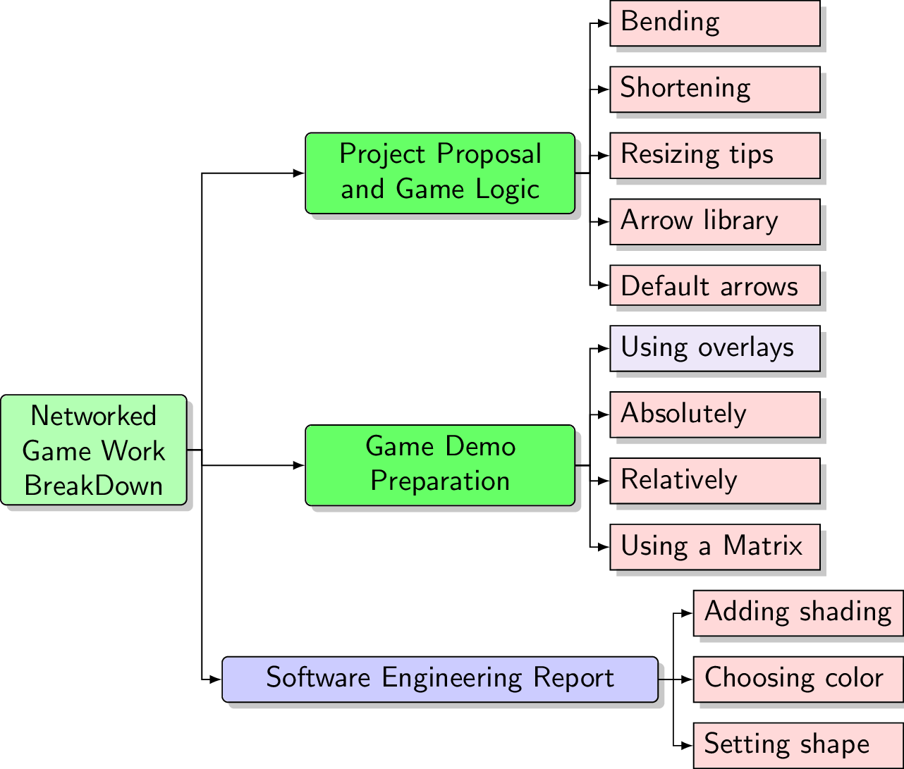

\documentclass{standalone}
\usepackage{forest}
\usetikzlibrary{arrows.meta,shapes,positioning,shadows,trees}
%
\tikzset{
basic/.style = {draw, text width=2cm, drop shadow, font=\sffamily, rectangle},
root/.style = {basic, rounded corners=2pt, thin, align=center,
fill=green!30},
onode/.style = {basic, thin, rounded corners=2pt, align=center, fill=green!60,text width=3cm,},
tnode/.style = {basic, thin, align=left, fill=pink!60, text width=6.5em},
xnode/.style = {basic, thin, rounded corners=2pt, align=center, fill=blue!20,text width=5cm,},
wnode/.style = {basic, thin, align=left, fill=pink!10!blue!80!red!10, text width=6.5em},
edge from parent/.style={draw=black, edge from parent fork right}
}
%
\begin{document}
\begin{forest} for tree={
grow=east,
growth parent anchor=east,
parent anchor=east,
child anchor=west,
edge path={\noexpand\path[\forestoption{edge},->, >={latex}]
(!u.parent anchor) -- +(5pt,0pt) |- (.child anchor)
\forestoption{edge label};}
}
[Networked Game Work BreakDown, root
[Software Engineering Report, xnode
[Setting shape, tnode]
[Choosing color, tnode]
[Adding shading, tnode] ]
[Game Demo Preparation, onode
[Using a Matrix, tnode]
[Relatively, tnode]
[Absolutely, tnode]
[Using overlays, wnode] ]
[Project Proposal and Game Logic, onode
[Default arrows, tnode]
[Arrow library, tnode]
[Resizing tips, tnode]
[Shortening, tnode]
[Bending, tnode] ] ]
\end{forest}
\end{document}Created by David Li